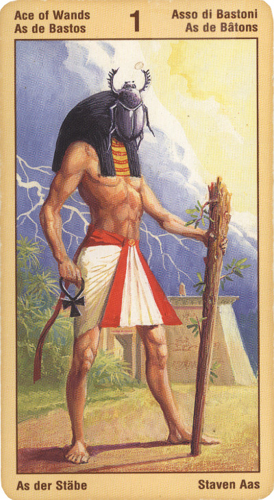

Туз Жезлов
Прямое положение: творчество, изобретение, смелое предприятие, производительные силы, которые помогают в этом; принцип, начинание, исток, рождение, семья, происхождение. В соответствии с другим толкованием - деньги, удача, наследство.
Значение: Туз Жезлов символизирует огонь, рост, жизненную силу; это и мужское начало, воля, энер¬гия. Она означает не только вполне осознанные желания, но и достаточную для их выполнения силу. Смело бери¬тесь за дело - и удача будет ваша, говорит эта карта.
В самом обыденном смысле может означать мужскую силу: если он выпадает мужчине, значит, у него с этим делом все в порядке, если женщине – совет найти себе мужчину.
Эта карта также может указывать на способность выступить с инициативой, т. е. взять на себя ответственность за ту или иную идею, за воплощение этой идеи в жизнь, при этом проявляя оптимизм и твердую веру в ее успешный исход.
В связи с тем, что, помимо прочего, число один содержит в себе идею завершения, эта карта также может представлять окончание и реализацию некоего проекта или творческого замысла. Идея наконец-то появилась на свет - это еще одна разновидность начала. По этой причине данная карта иногда может символизировать зачатие или рождение ребенка.
Так же, как и другие Тузы, Туз Жезлов олицетворяет возможности, открывшиеся перед нами, - или нам еще предстоит открыть их. Туз масти Жезлов обозначает предприимчивость, смелость и готовность пойти на риск, а также вдохновение, энтузиазм и раскрытие личности, причем в важнейших составляющих.
Туз - благополучный исход любого начинания. Эта карта предсказывает стабильное и гармоничное развитие ситуации, а также подчеркивает серьезность намерений гадающего.
Если вас волнует, осуществится ли ваше желание, то и тут Туз Посохов дает положительный ответ (если, конечно, он не находится по соседству с неблагоприятным Старшим Арканом, вроде «Повешенного» или «Дьявола», - в этом случае Туз Посохов лишь подчеркивает неудачный ход событий).
Если девушка гадает на жениха или просто любимого человека, Туз Посохов, особенно в сочетании с Арканами «Солнце» или «Мир», предсказывает удачное замужество, - правда, спустя некоторое время.
Это карта начала. Начинаний новых дел, новые идеи,которые следовало бы воплотить в жизнь. Удачные обстоятельства,возможность достить желаемого.Триумф и довольство.Стабильность. Серьезные намерения.Совет завязать дружбу,контакты. Получение наследства.
В перевернутом виде Туз Жезлов, наоборот, не советует вмешиваться в события, потому что у вопрошающего может не хватить сил. В обыденном плане для женщин – указание на отсутствие мужчины.
В перевернутом положении карта означает отсутствие новых идей, узколобость, нежелание принимать что-либо новое, преждевременный старт, заблуждения, неадекватное восприятие действительности, потерю смысла (цели), упадок, пустое прожигание жизни, старение.
В отрицательном значении карта говорит о крушении любого дела, упадке сил и духа. О связях портящих вашу репутацию. Недостаток уверенности в себе, информации о том, за что вы взялись. Даже если будет радость - она сквозь слезы.